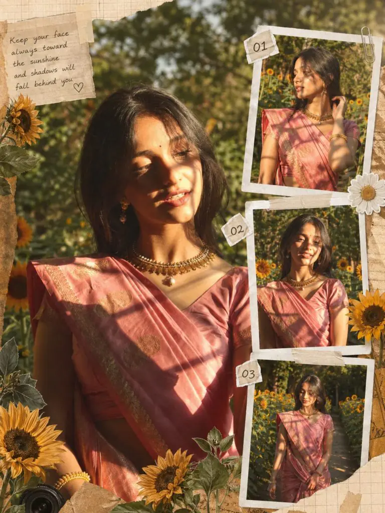
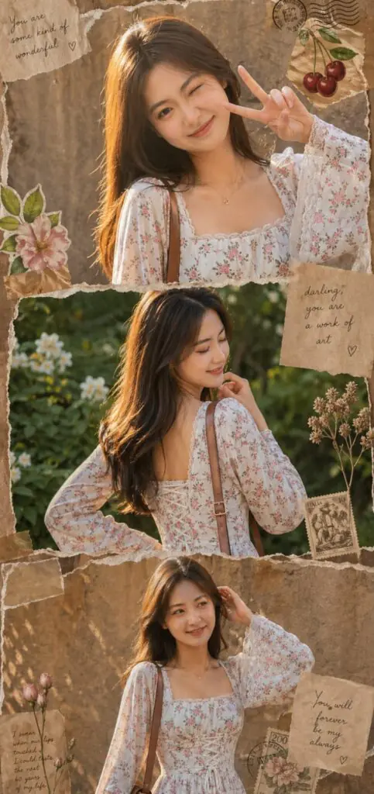
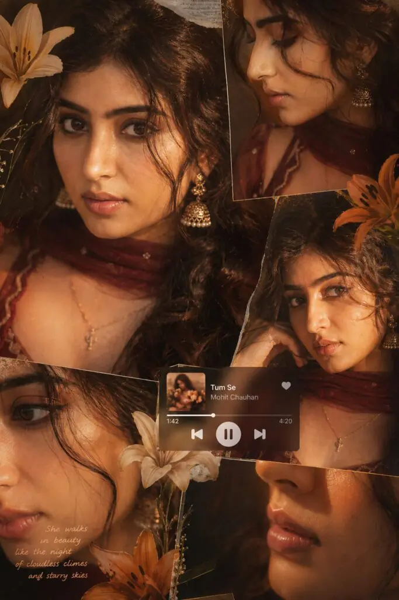
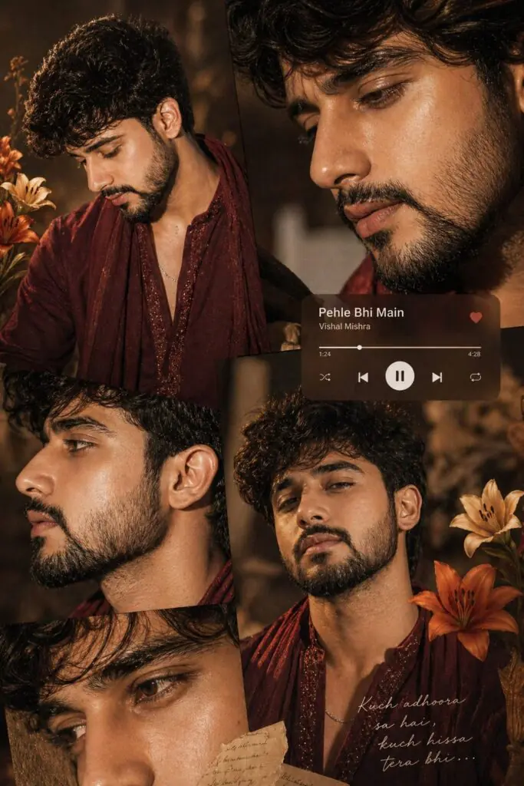

Aesthetic girls’ photos are trending everywhere on social media, especially on platforms like Instagram and Pinterest. These photos stand out because of their soft lighting, dreamy colors, and stylish vibe. But the truth is—you don’t need expensive cameras or editing skills to create them.
With the right ChatGPT prompt, you can transform any normal photo into a beautiful, cinematic aesthetic image in seconds. These prompts guide AI to apply perfect lighting, color grading, and depth effects automatically. It’s simple, fast, and beginner-friendly.
In this article, you’ll discover a powerful aesthetic girls photo prompt for ChatGPT that helps you create stunning, high-quality images with just one click. Whether you’re a content creator or just love editing photos, this guide will make your photos look next-level.
Want more awesome prompts?
Join our community and get the latest viral prompts daily.
A vertical collage design. The background consists of four stacked horizontal rounded rectangles.
165
Inside these panels are black-and-white cinematic shots of a young woman (use the uploaded image for 100% facial accuracy), featuring her with dark, slightly messy hair and stylish sunglasses in various expressive poses.
Superimposed in the foreground on the left side is a full-color, high-quality cutout of the same woman. She is wearing a light pink, short-sleeved peasant-style top with a sweetheart neckline and a softly ruffled peplum hem, along with puffed sleeves. She is paired with light-wash, high-waisted, wide-leg denim jeans. On her feet, she wears white platform sandals with a thick textured sole. She carries a small off-white rectangular shoulder bag with delicate floral or embroidered detailing, slung over her right shoulder.
The composition should follow a clean 9:16 aspect ratio, maintaining a balanced editorial fashion aesthetic with strong contrast between the monochrome
? AI PROMPT
A warm-toned cinematic portrait collage of a South Asian woman in traditional attire, arranged in three horizontal frames. She has long black hair styled loosely with soft strands falling across her face, wearing elegant gold jhumka earrings and multiple delicate bangles. Her hands are decorated with intricate mehendi (henna) designs.
Frame 1 (top):
She is gently adjusting her jhumka earring, head turned slightly away from the camera, creating a soft candid moment. The lighting is diffused and golden, with window shadow patterns falling across her face and shoulder.
Frame 2 (middle):
She turns back toward the camera with a subtle, natural smile. Loose strands of hair move across her face, adding motion and softness. The lighting remains warm and dreamy with soft glow, creamy highlights, and low contrast.
Frame 3 (bottom):
A close-up of her hand raised gracefully, showcasing detailed mehendi patterns and stacked bangles. Window light casts artistic shadows across her hand and background.
Style & Lighting:
Golden hour inspired indoor lighting, soft haze, dreamy glow, cinematic color grading, slightly faded blacks, golden warm beige and amber tones, gentle film grain, low sharpness for a nostalgic look.
Camera & Composition:
Shallow depth of field, soft focus, 50mm lens feel, minimal background, natural light through a window casting geometric shadows.
Mood:
Elegant, intimate, traditional, romantic, soft aesthetic.

? AI PROMPT
*Prompt*
Use the uploaded image as the ONLY facial identity reference.
STRICT IDENTITY RULE:
- Face must remain 100% identical to the uploaded image
- No beautification, no reshaping, no skin smoothing
- Preserve real skin texture, expressions, proportions
- Do NOT change hairstyle, age, or facial structure
STYLE & AESTHETIC:
- Create a trendy Instagram collage edit with a warm golden sunlight vibe
- Outdoor garden / sunflower theme
- Soft cinematic golden hour lighting
- Natural shadows, slightly lifted exposure
- Add aesthetic scrapbook elements: sunflowers, paper textures, stickers, soft overlays
- Clean, premium, Instagram-ready layout
MAIN + SIDE FRAMES (IMPORTANT):
- One main large portrait (center or slightly off-center)
- Add exactly 3 small polaroid-style images on the side (vertical strip)
POSE VARIATION (STRICT RULE):
- Each of the 3 small images MUST have different poses
- Pose 1: Looking away / side profile
- Pose 2: Smiling / slight tilt / candid
- Pose 3: Walking / hand movement / natural motion
- Do NOT repeat same pose
- Keep same outfit and same location for all frames
- Face identity must remain EXACTLY same in all poses
EXTRA:
- Optional small aesthetic quote sticker (subtle, not distracting)
QUALITY:
- Ultra-realistic
- High detail
- iPhone-like natural color science
- Sharp subject focus
- 4K output
- No over-editing, no artificial skin
*• Use Chat Gpt For Better Results*

? AI PROMPT
Use only the uploaded face (identical in all panels).Create an ultra-realistic 3-panel vertical collage (top/middle/bottom) of the same young woman.Outfit: White floral cotton kurti, square neckline (front/back), fited bodice with
corset lace-up, long bell sleeves with lace
trim. Minimal gold jewelry + shoulder
handbag. Same hair (long, slightly
voluminous) and styling in all panels.
Top: Close-up side pose, one arm raised, soft confident expression, warm lighting, textured background.
Middle: Back pose, hand under chin, eyes closed smiling, natural daylight, outdoor garden.
Bottom: Mid-shot front pose, hand on head, looking sideways, warm sunlight, slightly grainy backdrop.
Style: Ultra-realistic scrapbook collage with torn paper edges, vintage textures, stickers (cherries/flowers), stamps, handwritten notes. Cohesive across all pannel

? AI PROMPT
A warm-toned cinematic portrait collage of a young woman with soft glowing skin, subtle freckles, and glossy nude lips. She has long dark brown hair styled in loose waves with face-framing strands. She is wearing traditional gold jhumka earrings and a delicate necklace, dressed in a deep maroon outfit with a sheer dupatta around the neck. The lighting is golden-hour inspired with rich amber highlights and soft shadows, creating a cozy, intimate mood. The composition is a collage layout with multiple cropped frames of her face-close-ups of eyes, lips, and side profile-arranged aesthetically. Add soft floral elements like beige and orange lilies placed around the frame. Include a blurred music player overlay showing a song playing for a nostalgic vibe. Skin appears dewy and radiant, with minimal elegant makeup. Style: soft glam, editorial, aesthetic Instagram collage, warm color grading, high detail, shallow depth of field, cinematic lighting, 4K, ultra-realistic.

? AI PROMPT
A warm-toned cinematic portrait collage of a young man with clear glowing skin, natural texture, and subtle facial details. He has thick dark hair styled in soft waves or a slightly messy textured look, with a few strands falling naturally on the forehead. His expression is calm and confident, with softly defined lips and sharp yet natural facial features.
He is wearing a deep maroon traditional kurta with subtle embroidery, paired with a lightweight dupatta or shawl draped casually around the neck. Add traditional accessories like a simple chain or minimal ring for an elegant touch.
The lighting is golden-hour inspired with rich amber highlights and soft shadows, creating a cozy, intimate, and cinematic mood. The composition is a collage layout with multiple cropped frames of his face — including close-ups of eyes, jawline, lips, and side profile — arranged in an aesthetic editorial style.
Include soft floral elements like beige and orange lilies placed subtly around the frame for artistic balance. Add a blurred music player overlay showing a song playing to create a nostalgic Instagram vibe.
Skin appears slightly dewy and radiant with a natural matte finish. Style: soft glam (male editorial), aesthetic Instagram collage, warm color grading, high detail, shallow depth of field, cinematic lighting, ultra-realistic, 4K resolution.
? AI PROMPT
Ultra-realistic cinematic collage of a young woman using the uploaded face exactly 📸✨. The image is composed of multiple rectangular photo panels layered vertically and diagonally, creating a scrapbook-style layout 🖼️📔. Each panel shows close-up and mid-shot portraits of the same girl in a dim indoor room 🌙. Lighting: strong, warm, golden-orange direct flash lighting hitting the face from the front-left 💡, creating high contrast, deep shadows, and a glowing skin effect ✨. Background remains dark with visible window curtains slightly illuminated 🪟. Harsh highlights on cheekbones, nose, and lips. Slight film grain and soft blur for a dreamy vintage feel 🎞️. Color grading: intense amber, burnt orange, and golden tones dominating the entire image 🧡🟠. High saturation, slightly crushed blacks, and glowing highlights. Subject styling: messy tied-back hair with loose strands falling on face 💇♀️, glossy lips 💄, subtle eyeliner, dewy skin. Wearing a delicate necklace with small pendants and a casual off-shoulder white top 📿👚. Composition details Top panel: serious expression, looking directly at camera 👀. Middle panel: cropped lips and necklace close-up 💋. Bottom left: extreme close-up of eyes with strong shadow split across face 🌑. Bottom right: angled portrait with soft side gaze. Panels overlap slightly with uneven spacing for aesthetic collage look. Overlay elements: Add realistic flower stickers (lilies in orange, cream, and red tones) placed around the collage 🌷🌼. Add a music player Ul card in the center-left area with a soft rounded design 🎵. Music player text: Title: “khat" Artist: “Navzot Ahuja" Include minimal playback bar and icons (playlpause, skip). Final touches; Slight glow/bloom effect on highlights ✨. Subtle vignette around edges. Flash photography look, like taken on a digital camera at night 📷. Maintain natural skin texture, avoid over-smoothing.
Creating aesthetic photos is no longer difficult or time-consuming. With the help of ChatGPT prompts, you can easily turn your normal pictures into eye-catching, cinematic edits without any advanced skills.
The key is using the right prompt and understanding how small details like lighting, colors, and focus can completely change the look of your photo. Once you try it, you’ll see how powerful and easy it is.
So go ahead, use the prompt, experiment with your photos, and start creating stunning aesthetic images that grab attention and boost your content instantly.